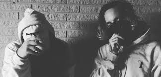
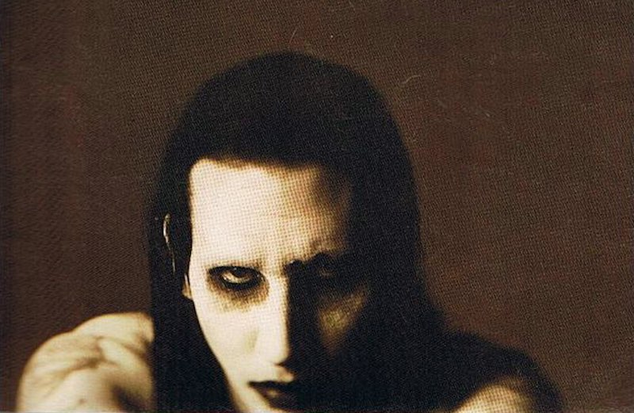
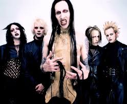
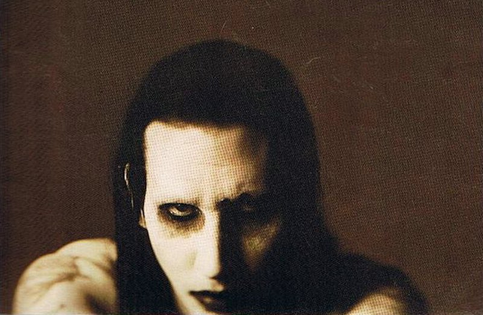
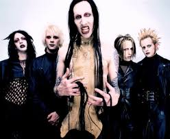

Home
Portfolio
biography
Music and Creation

Mac Miller, an artist i have looked up to since i was about 10 years old helping me throught my struggles


$uicideboy$ is a group from Atlanta making dark, melodic type sounds. $crim & Ruby who inspire my music to a
great amount of motivation to keep going even if everything is'nt right
 



Marylin Manson is a metal/ rock and roll superstar, growing up i listened to
him a lot gravitating me more to a diffrent side of looks on the world
giving me every single type of perspective in music with him showing me it's okay to not be normal